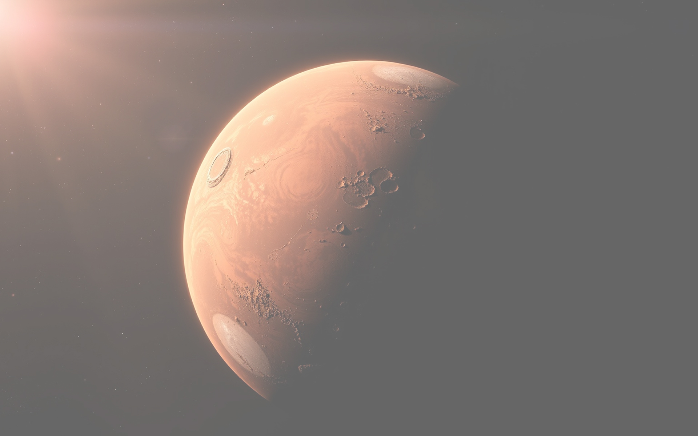
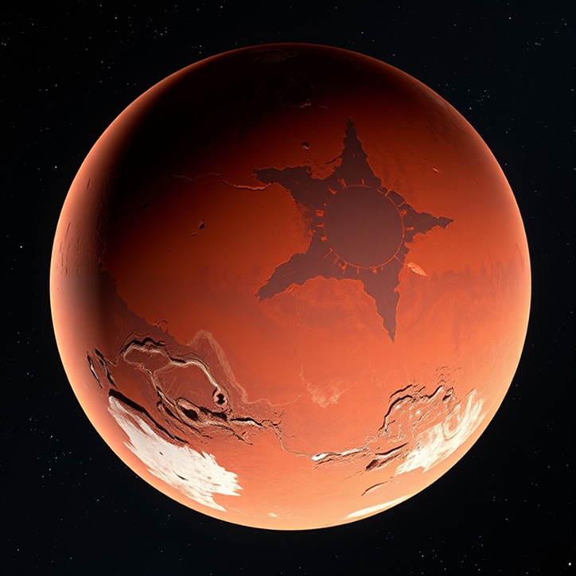
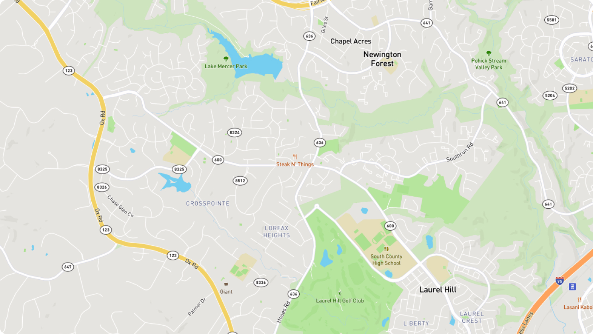
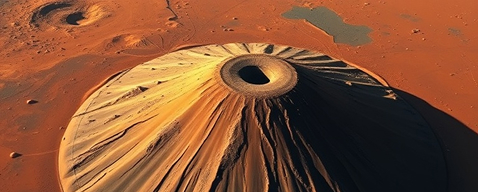
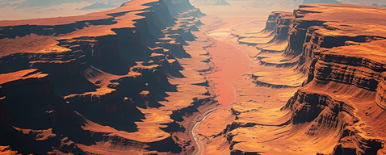
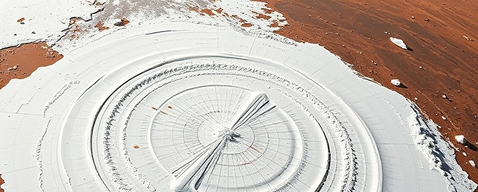
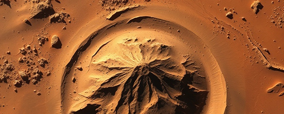
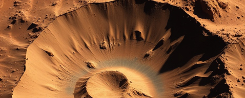
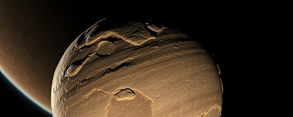

ABOUT MARS
The fourth planet from the Sun and Earth's closest neighbor, Mars has captivated human imagination for centuries.

Mars is often called the "Red Planet" due to the iron oxide prevalent on its surface, giving it a reddish appearance. Mars is a terrestrial planet with a thin atmosphere, with surface features reminiscent of both the impact craters of the Moon and the valleys, deserts and polar ice caps of Earth.
Mars has two moons, Phobos and Deimos, which are small and irregularly shaped. These may be captured asteroids similar to 5261 Eureka, a Mars trojan.
Average -60°C (-80°F), with extremes from -125°C (-195°F) to 20°C (70°F) at the equator during summer.
Thin atmosphere composed of 95% carbon dioxide, 3% nitrogen, 1.6% argon, and traces of oxygen and water.
Home to Olympus Mons, the largest volcano in the solar system, and Valles Marineris, a vast canyon system.
Evidence suggests Mars once had significant liquid water on its surface, with potential subsurface water ice today.
MARS MISSIONS TIMELINE
Humanity's journey to understand and explore the Red Planet spans decades of scientific achievement.
First successful Mars flyby, capturing the first close-up images of another planet from deep space.
First successful Mars landers, conducting experiments to search for evidence of life.
Delivered the Sojourner rover, the first wheeled vehicle to operate on another planet.
Twin rovers that significantly expanded our understanding of Mars' geology and water history.
Car-sized rover equipped with laboratory instruments to analyze Martian soil and atmosphere.
Future Mars Exploration
Development of nuclear thermal and plasma propulsion to reduce travel time to Mars from months to weeks.
Research into 3D-printed habitats using Martian regolith and underground structures to shield from radiation.
Theoretical research into the possibility of transforming Mars' environment to be more Earth-like over centuries.
VIRTUAL TOUR
Explore the most fascinating locations on the Martian surface through our interactive virtual tour.


The largest volcano in the solar system, standing nearly three times the height of Mount Everest with a base the size of Arizona.

A vast system of canyons that runs along the Martian equator, stretching as long as the United States is wide.

The north and south poles of Mars feature ice caps made of water and carbon dioxide ice that grow and shrink with the seasons.

Landing site of the Curiosity rover, this ancient crater shows evidence of past lakes and streams on the Martian surface.

Home to the Perseverance rover, this ancient lakebed contains a river delta that may preserve signs of past microbial life.

Mars' two small, irregularly shaped moons, likely captured asteroids that orbit close to the planet's surface.
MAKING MARS HOME
Our comprehensive plan for establishing the first permanent human settlement on the Red Planet.
Modular, pressurized habitats with radiation shielding, utilizing both prefabricated components and 3D-printed structures using local materials.
- Underground construction for radiation protection
- Self-healing materials for micrometeorite impacts
- Expandable architecture for colony growth
Sustainable food production systems using hydroponics, aeroponics, and controlled environment agriculture to provide fresh food for colonists.
- LED lighting optimized for plant growth
- Closed-loop water and nutrient recycling
- Genetically optimized crops for Mars conditions
Multi-source power generation combining solar arrays, nuclear fission, and advanced battery storage to ensure reliable energy in all conditions.
- Dust-resistant solar panel technology
- Small modular nuclear reactors
- Grid-scale solid-state battery storage
A fleet of vehicles designed for the Martian environment, from pressurized rovers for long-distance exploration to autonomous drones for aerial surveys.
- Pressurized long-range exploration vehicles
- Autonomous construction and mining robots
- Specialized drones for Martian atmosphere
Colonization Timeline
- Initial robotic missions to establish infrastructure
- Deployment of power generation systems
- Construction of initial habitat modules
- First crewed mission (temporary stay)
- Establishment of permanent base
- Expansion of agricultural systems
- Development of in-situ resource utilization
- First children born on Mars
- Self-sustaining colony of 1,000+ people
- Development of Martian industries
- Multiple settlement locations
- Initial atmospheric modification experiments
JOIN THE MISSION
Be part of humanity's greatest adventure as we take our first steps toward becoming a multi-planetary species.
Stay informed about the latest developments in our Mars mission planning, technology breakthroughs, and opportunities to get involved.
Join our network of passionate advocates who help educate the public about Mars exploration and colonization.
Contribute to real Mars research by analyzing data, identifying surface features, or participating in simulation studies.
Online courses covering everything from Martian geology to life support systems and colonization strategies.
We're building a diverse team of experts across multiple disciplines to make our Mars mission a reality.